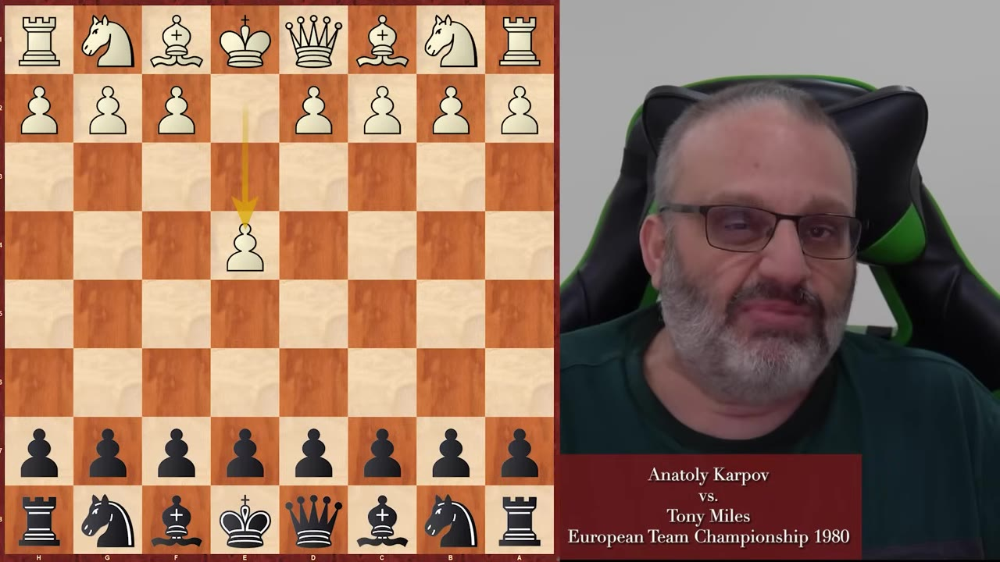
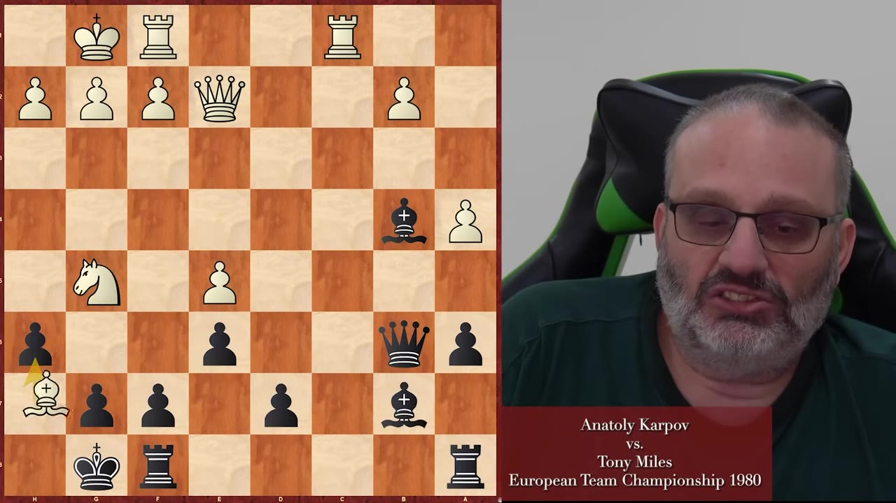
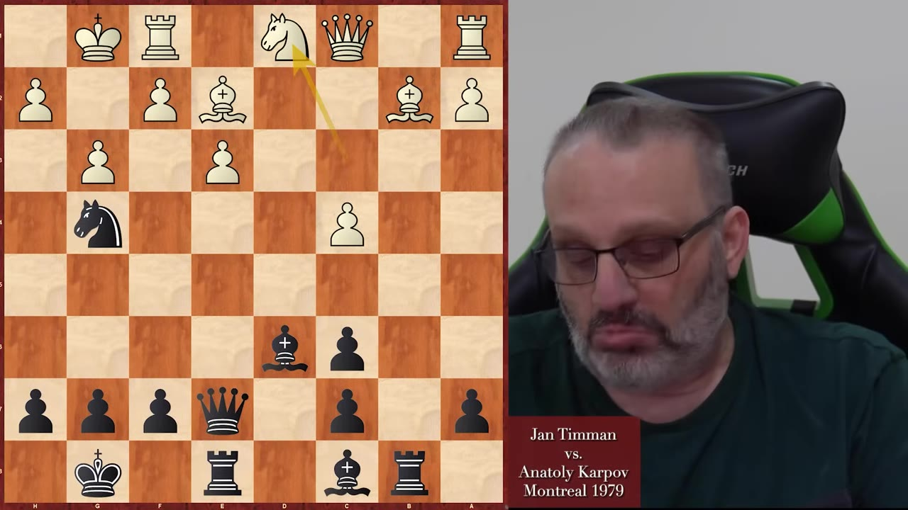
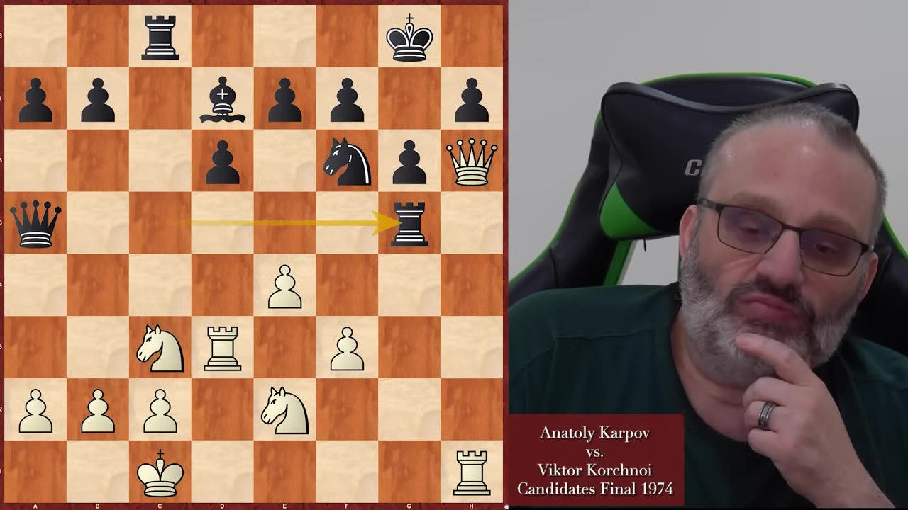
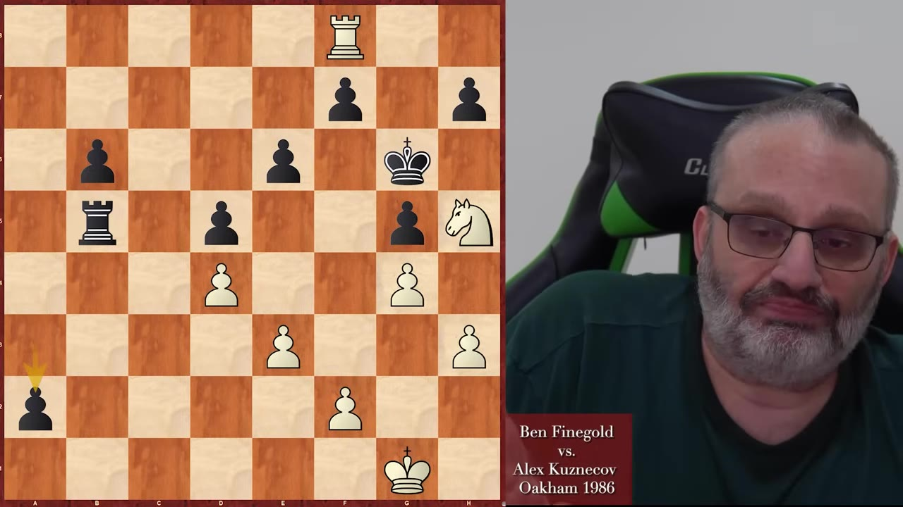

Engines tell you what to play. Opponents don't care. A grandmaster explains why practical play — moves that create real problems for real people — beats engine-perfect chess every time, using Anatoly Karpov as his proof.
Watch on YouTubeEngines see a thousand moves ahead. You see zero or one. Playing like an engine is impossible — and it's why a lot of intermediate players stall.
Finegold's own opening repertoire with Black is "suspicious" by engine standards. He gets positions he understands, his opponents don't — and that's why he beat Shakhriyar Mamedyarov, the best player he ever beat.

You can't play like an engine and frankly, you can't play like a super grandmaster because they understand and see a lot more than you do. You have to do the best that you can do.GM Ben Finegold
In a 1980 game against Karpov, Miles faces a Greek Gift bishop sacrifice on h7. Grandmasters had exhaustively analyzed it and concluded it was winning for White. Karpov plays a safer alternative.
After the game, they ask Miles: Did you check the sacrifice?
His answer is one of the most practical lines ever spoken at a chess board. He didn't spend fifteen minutes calculating a bishop sacrifice because he knew one thing: Karpov doesn't play speculative sacrifices.

It doesn't matter if the sacrifice is good. I knew Karpov wouldn't play it.Tony Miles
Miles saved clock time, avoided a losing line, and eventually won the game. Karpov blundered a pawn later — not because he missed the sacrifice, but because his queen drifted to d3. Miles took a rook on c1, then the b2 pawn, and converted two bishops and two extra pawns into a win.
Finegold was nine years old when his family drove from Detroit to Montreal to watch the 1979 super-tournament. He saw Karpov, Tal, Tal, Timman, Larsen, Spassky — and Edward Lasker, in his 90s, playing chess like it was nothing.
In this tournament, Karpov (playing Black) faces Jan Timman. The position gets sharp. Timman's pieces are passive, Karpov's pawns control the center. Then Karpov plays:

Timman later admitted: That's the move I missed. Karpov had to see c5 — his defensive resource — before playing Nh2. Most lower-rated players who sacrifice think "he must take it, then I win." Karpov looks at the captures and the alternatives.
This refutes Miles's claim directly. Karpov did sacrifice — and he did know what was happening.
The de facto world championship match between Karpov and Korchnoi — Karpov won by one point. In this Sicilian Dragon with opposite-side castling, everyone expected positional play. They got tactics.
Karpov sacrifices his h-pawn, then his g-pawn, then a rook on d5 (hanging to a knight and a rook). Each sacrifice has a concrete threat. Each forces his opponent into a worse position.

Korchnoi was on his heels the whole game. White made threats continuously; Black had one threat — and Karpov saw it.
Black got that one mate threat — black's only threat of the game. White was making threats the whole game.GM Ben Finegold
Finegold shows a game from a 1986 junior tournament in England where his opponent was up two pawns and tried to calculate everything instead of playing practically.
When you're up two pawns for nothing, you shouldn't have to figure it all out. The practical move is to stop your opponent's counterplay and promote your passers later. But his opponent couldn't wait. He played a3, sacrificing his bishop to promote his a-pawn with check.
He was wrong. After Kh6, White has one winning move: h4, threatening hxg5. The game demonstrates the flip side of practical play — it's not just about creating problems for your opponent. It's about stopping their problems before they create new ones.

Try to get rid of your opponent's counterplay. Try to play simple moves. Don't try to do too much and you'll see your results improve.GM Ben Finegold
:::